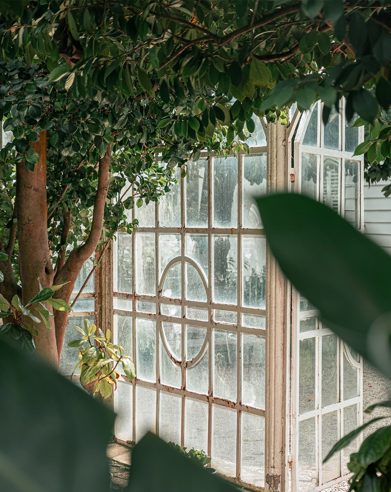
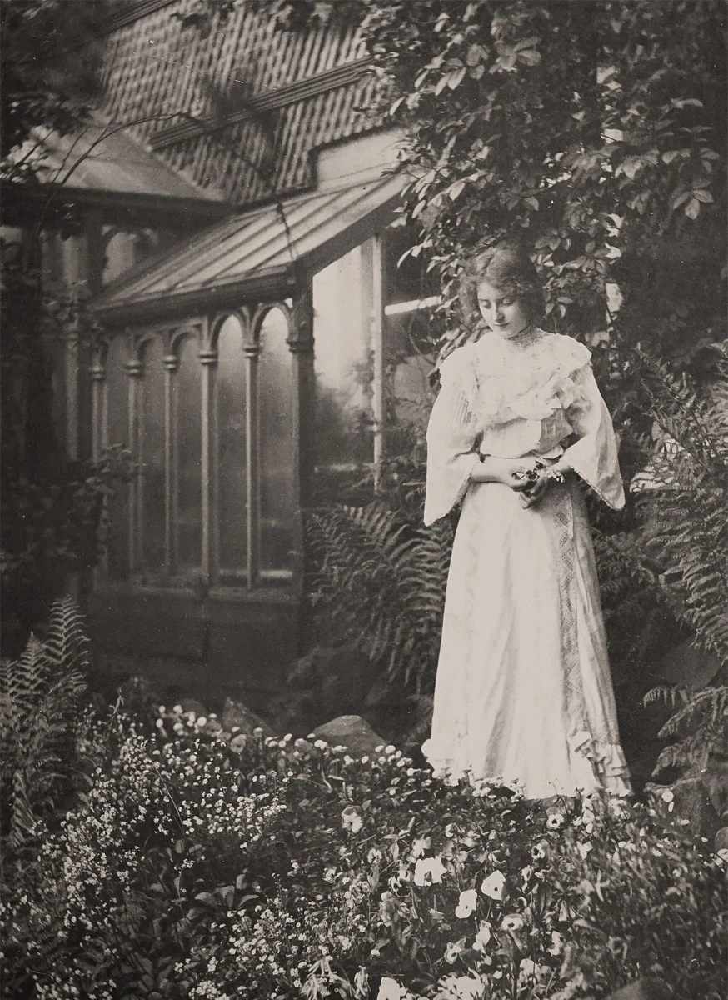

Where It All Began. . .
The history of Wildwood Conservatory began in 1896, when naturalist, entomologist, and painter Elizabeth May Warden inherited the Warden family estate and its surrounding woodlands. Drawn equally to science and art, Elizabeth believed the natural world should be observed not only with careful study, but with genuine wonder.
Over the next three decades, she transformed the estate into a living landscape of botanical beauty. She designed formal gardens inspired by the English landscape tradition, planted quaint cottage gardens filled with heirloom flowers and medicinal herbs, and carefully documented hundreds of native plants and insects through detailed field journals and watercolor illustrations. While the cultivated gardens flourished around the residence, Elizabeth made the uncommon decision to leave the surrounding forests, wetlands, and meadows largely untouched, recognizing their ecological value long before conservation became widely embraced.
Building a Legacy. . .
As Elizabeth’s collections expanded, so did her vision. She assembled one of the region's most extensive private libraries of botanical, entomological, and horticultural works, welcoming fellow naturalists, university scholars, artists, and students to study the estate's living collections. Informal lectures, nature walks, and scientific exchanges gradually established Wildwood as a respected center for learning.
When Elizabeth passed away, she left the entire estate—including its gardens, library, scientific collections, and surrounding wilderness—to a charitable trust with one enduring purpose: To preserve the beauty and diversity of the natural world through conservation, education, and scientific discovery
